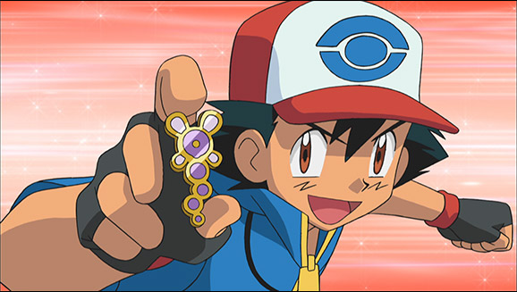
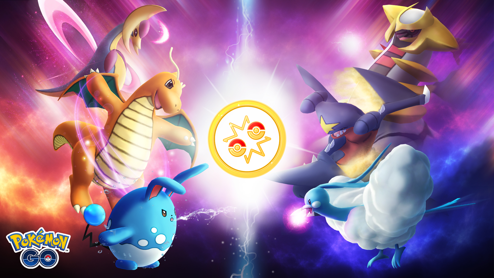
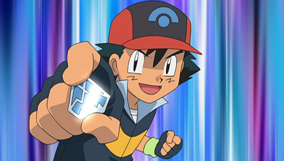
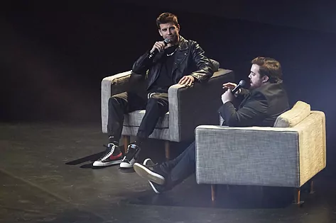
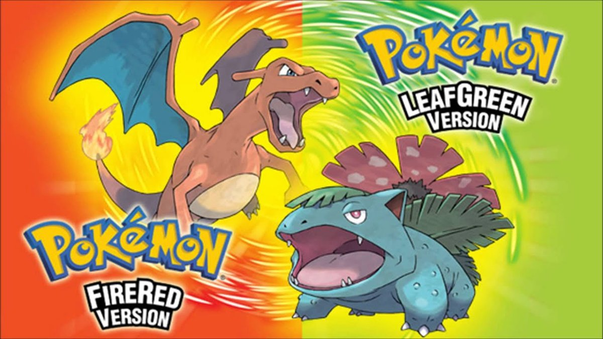
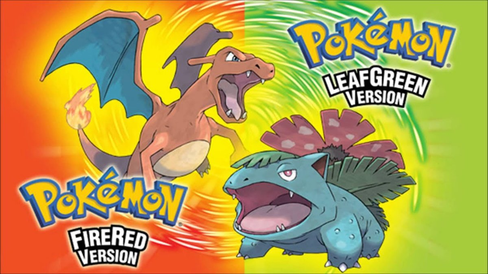

TWITCH CUP TXAPELKETA
ARAUAK
- 18 urtetik gorakoa izatea
- Andorran ez bizitzea
- 5000 jarraitzaile baino gehiago izatea Twitch plataforman
- Pokémonen aditua izatea
DATA
2022ko azaroaren 17tik 25era
PARTE-HARTZAILEAK
IBAI LLANOS
- Adina: 27 urte
- Jaioterria: Bilbo
- Hasierako Pokemona: Mudkip
- Twitch kanala: Ibai
BARBEQ
- Adina: 32 urte
- Jaioterria: Bartzelona
- Hasierako Pokemona: Squirtle
- Twitch kanala: Barbeq
XOKAS
- Adina: 31 urte
- Jaioterria: Lugo
- Hasierako Pokemona: Charmander
- Twitch kanala: ElXokas
FOLAGOR
- Adina: 28 urte
- Jaioterria: Fuenlabrada
- Hasierako Pokemona: Nidoran
- Twitch kanala: FolagorLives
ILLOJUAN
- Adina: 28 urte
- Jaioterria: Fuengirola
- Hasierako Pokemona: Totodile
- Twitch kanala: Illojuan
REVEN
- Adina: 29 urte
- Jaioterria: Bartzelona
- Hasierako Pokemona: Ralts
- Twitch kanala: Reventxz
TXAPELKETA
Nola izango da txapelketa?
  TXAPELKETAREN LEKUA
Denbora luzean zaila izan da adieraztea zein izan zen lehen bideojokoa, batez ere bideojoko horren definizio ugari ezarri direlako, baina lehen bideojokotzat har daiteke Alexander S. 1980-1989: 80ko hamarkada bideojokoaren sektorean hazkunde handiarekin hasi zen, 70eko hamarkadan agertu ziren jolas-makinen eta bideo-kontsolen aretoen ospeak bultzatuta.
Industria berri honi lotutako negozioak gauza handiak lortu zituen 80ko hamarkadaren lehen urte hauetan, baina hala ere, 1983an bideojokoaren krisia deiturikoa hasi zen, batez ere Estatu Batuetan eta Kanadan eraginez, eta ez zen 1985era arte amaituko. Hauek 70eko hamarkadaren hasieran hasi ziren Mattelek abiarazitako lehen joko erabat elektronikoekin, bideojokotzat nekez har zitezkeenak, eta gero eta ospe handiagoa hartu zuten Colecok egindako jolas-jokoei eta Nintendoren Game & Watch bezalako mikrojoko adiktiboei esker.
1990-1999: 3Den iraultza 90eko hamarkadaren hasieran, bideo-kontsolek jauzi tekniko garrantzitsua egin zuten "16 biteko belaunaldia" deiturikoaren lehiaketari esker. Lehiaketa horretan parte hartu zuten Mega Drive, Nintendoren Super Nintendo Entertainmet, NECen Engine PC, mendebaldean Turbografx izenez ezagutzen dena, eta Changer CPS (Capcom). Belaunaldi horrek jokalari kopurua handitzea eta CD-ROMa bezalako teknologiak sartzea ekarri zuen, bideojokoen generoen barruan bilakaera garrantzitsua, batez ere gaitasun tekniko berriei esker.
AZKEN BERRIAK
El streamer y creador de contenidos Ibai Llanos y el futbolista y emprendedor Gerard Piqué presentaron este miércoles en Barcelona Koi, su nuevo equipo de eSports o deportes electrónicos. La expectación por conocer los detalles de esta alianza en forma de club era máxima desde hacía meses, tal como quedó demostrado con las 15.000 personas que acudieron al Palau Sant Jordi para presenciar la botadura y con los 350.000 usuarios que llegaron a reunirse en el canal del vasco en Twitch para seguir el evento en directo. La acogida que ha tenido el último proyecto de Llanos y Piqué refleja el peso que han cogido los deportes electrónicos. No en vano, según 'Statista', el negocio de los eSports en España facturó más de 21 millones de euros en 2020 y algunas previsiones apuntan a que en 2025 habrá 1.000 millones de espectadores alrededor del mundo. Así, los fundadores de Koi confían en conquistar ese mercado a golpe de derechos de emisión, patrocinios y venta de entradas.
GAMING ESPAZIOA
Ongi etorri munduko gaming txapelketa handienera. Hemen, unean uneko lehiaketa guztiak kontsulta ditzakezu, edo hurrengo hilabeteetan jokatutakoak izango diren lehiaketa guztiak ikus ditzakezu.
 


JOKOAREN MEKANIKA
Pokemon entrenatzailea
Bideojokoen erabiltzaileei Pokemon Entrenatzailea esaten zaie. Bi helburu dituzte (Pokemonen joko gehienetan): jokoa girotuta dagoen fikziozko eskualdean eskuragarri dauden pokemon espezie guztiak harrapatzea, eta, horrela, Pokemexeko pokemon guztien informazioa osatzea; bestalde, entrenatu egin behar dituzte eta beste entrenatzaileetako beste pokemon batzuei aurre egin, beren trebetasunak, indarra eta talentua erakusteko eta, horrela, Pokemon Maisu bihurtzeko. Hori lortzeko, pokemon entrenatzaileek Pokemon munduko eskualdeetan zehar bidaiatzen dute, gimnasioko dominak bilduz. Domina horiek gimnasioko liderrak garaitu ondoren lortzen dira. Borroka horretan, entrenatzaileak eta gimnasioko liderrak pokemonei aurre egiten diete Pokemon bataila batean beren trebetasun bereziak probatzeko.
Pokemon motak
Motatan antolatzen dira pokemonak. Altzairu eta ezbehar motak 2000. urtean gehitu ziren, Gold, Silver eta Crystal jokoetan, eta maitagarri mota 2013an gehitu zen Pokemon X eta Y jokoetan. Adibidez, Kabutops-ek (Ura/Arroka) landare motako Pokemon Giga drainatua mugimendua ikas dezake. Pokemon bakoitzak ikas ditzakeen mugimendu edo eraso kopuru jakin bat du. Horiek motaren edo elementuaren arabera sailka daitezke (adibidez, trumoi-erasoa eraso elektriko mota bat da). Pokemonak ere horrela ordenatzen eta banatzen dira, beste batzuen aurrean abantailak edo desabantailak emanez. Adibidez: ur motako pokemon batek su motako pokemon bat garaitzeko probabilitate handiagoa du landare mota batek baino, ur motako erasoek sua itzaltzen baitute, eta su motako erasoek, berriz, landareak erretzen dituzte. Landareei, berriz, urarekin batera hazten direnez, ez die kalte handirik eragiten. Sekuentzia hau harri, paper edo guraize joko ezagunarekin alderatuko litzateke.
Hasierako pokemon-a
Bideojokoen alderdi konstanteetako bat da, hasiera-hasieratik, jokalariek beren lehen pokemona jasotzen dutela Tokiko Irakaslearen opari gisa , pokemonean aditua den pertsonaia. Beti dira ur motakoak, su motakoak eta belar motakoak. 10 Adibidez, Pokemon Edizio Gorria eta Pokemon Edizio Urdina bertsioan , jokalariak bere pokemon gisa Bulbasaur , Charmander eta Squirtle aukeratzeko aukera du. Hala ere, Pokemon Edizio Horian, entrenatzaileak Pikachu hartuko du bere hasierako pokemon gisa. Beste alderdi konstante bat da jokalariaren aurkariak, jokalariak bezala entrenatzaile egiten denak, beti aukeratuko duela pokemon bat, protagonistaren aldean abantaila izango duena. Adibidez: jokalariak belar motako pokemon bat aukeratzen badu, aurkariak beti su motako pokemon bat aukeratuko du, hasierako pokemona bezala.
Pokedex
Jokoetan, bere funtzioa pokemon baten datuak erregistratzea da. Mangan eta animean, Pokemexa entziklopedia elektroniko bat da, entrenatzaileari pokemon ezezagun bati buruzko informazioa ematen diona, pokemenaren aurrean pokemexa erakuste hutsarekin. Helburua da dagoen eskualdean eskuragarri dauden pokemon guztien informazioa osatzea. Pokemon Red eta Blue-n, pokemexak pokemon bakoitzaren informazioa erregistratzen du ikuste hutsarekin. Pokemon bati buruzko informazio zehatzagoa entrenatzaileak pokemon basati bat harrapatu ondoren dago eskuragarri. Alola eskualdean, pokemexa gainerako eskualdeetatik desberdina da, Rotom batean ezarrita baitago, etxetresna elektrikoetan eta beste objektu elektroniko batzuetan sartzeko gaitasuna duen Pokemon batean.